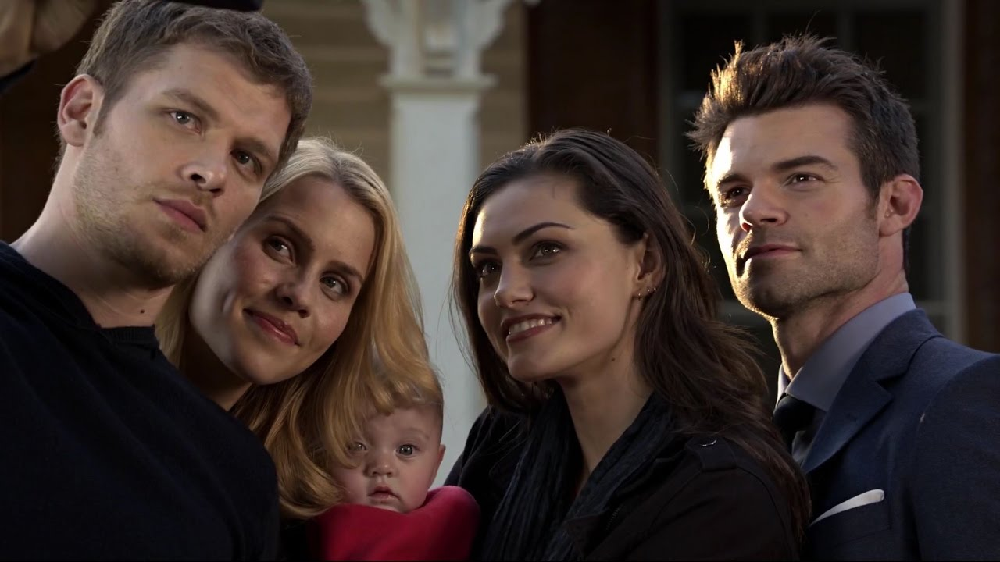
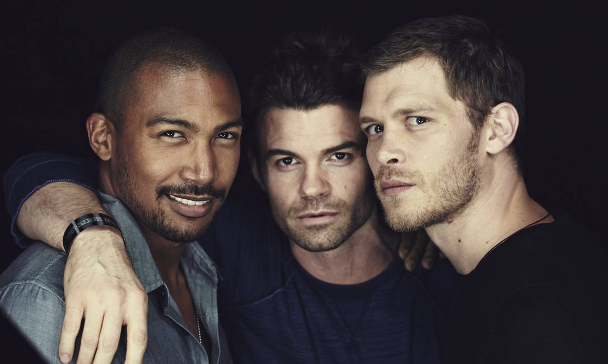

Nossas Aventuras
Amigos desde sempre
Apesar de ser o mais novo, o Recruta adotou o Chefe logo que chegou na família. Seu irmão mais velho sempre foi sinônimo de amizade, amor e confiança.

Passeios em família
"Nossos AUmanos sempre priorizaram por momentos em família, fosse com uma brincadeira em casa ou um passeio no parque."

A velhice
Assim como para as pessoas, a idade chega também para os animais. E não foi diferente com esses peludinhos, o Chefe teve momentos bem difíceis com várias enfermidades, mas o Recruta jamais o deixou sozinho...